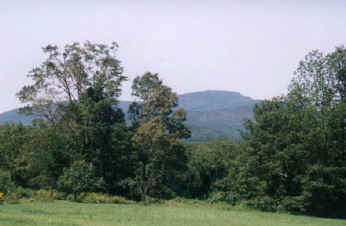

Brown Family Realty
- An independent agency since 1971 -

Mount Kearsarge
- Warner Youth Sports Association teams include baseball, softball, soccer, basketball, football and cheerleading.
- Rollins State Park on Mt. Kearsarge - From the center of town Mt. Kearsarge Road climbs almost to the 2937' to the summit. There's a short hike to the tower at the top of the mountain.
- The Warner River flows through town with rainbow, native trout and Atlantic Salmon.
- An Active Horse Community with indoor-riding arenas and many miles of old, unused dirt roads for trail riding.
- The Kearsarge Trail Snails Snowmobile Club - Many miles of well organized, groomed snowmobile trails, having direct access to Canada. These trails are used for cross-country skiing; snow shoeing, hiking, mountain biking and sled dogs.
- Ski areas within 1/2 hour, Mt Sunapee, Pats Peak and several more within an hour.
- The Warner Historical Society is comprised of all volunteers, working hard to keep Warner's heritage alive.
- Mt. Kearsarge Indian Museum - Education and Cultural Center boost 15,000 years of the history of native people.
- New Hampshire Telephone Museum - Discover over 130 years of telephone history.
- A multitude of well-known craftsmen, artists, illustrators, writers, and poets reside in Warner.
- Warner Fall Foliage Festival has been the focus of a well-organized autumn celebration for over 50 years, attracting thousands. It's awesome undertaking reveals Warner's Unique Community Spirit.
- Kearsarge Regional Schools offer excellent academics and full sports programs.
- Kearsarge Area Chamber of Commerce, promoting the economic development of the towns around Mt Kearsarge.
- Warner Statistics
Call us at 603-456-3000 to make an appointment or stop by our office at 8 East Main Street, Warner, NH 03278. From the south, take I-89 north, exit 8 - left @ end of ramp - right @ stop, onto Rt. 103 west - continue 1 mile - white colonial on left across from the town hall. From the north, take I-89 south, exit 9 - left @ end of ramp - 1 mile on the right.